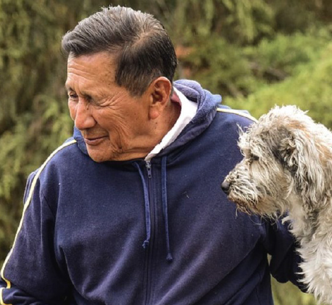
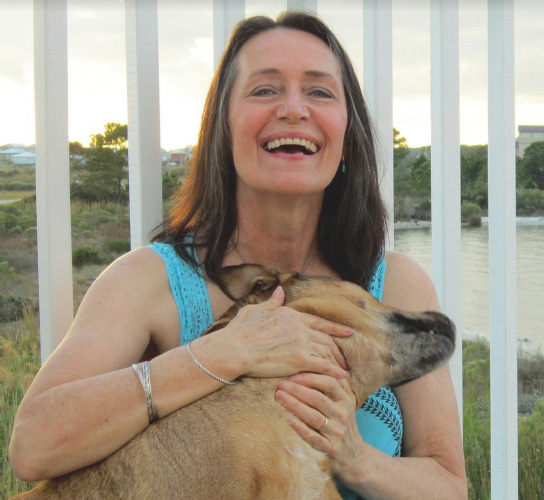
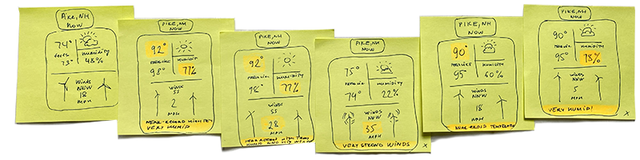
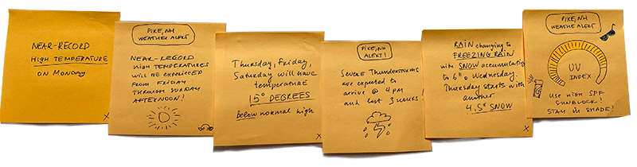
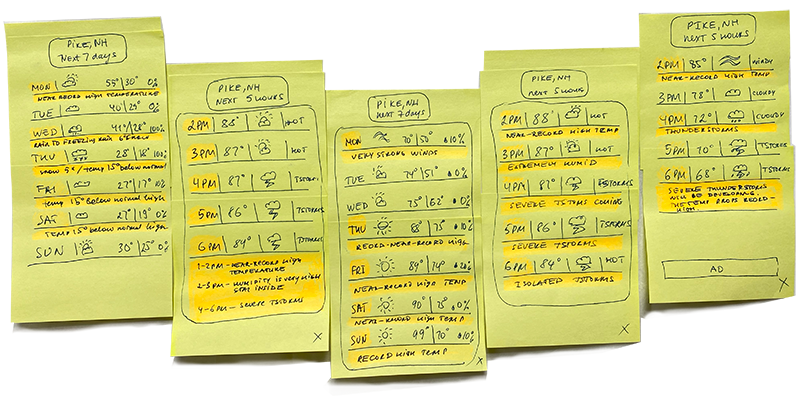
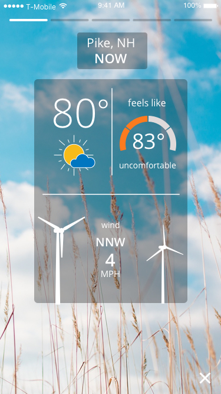
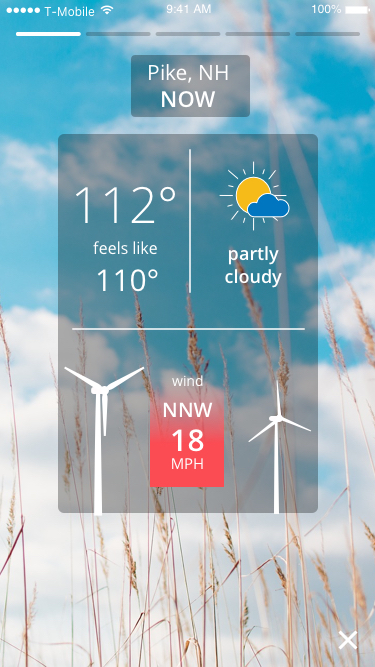
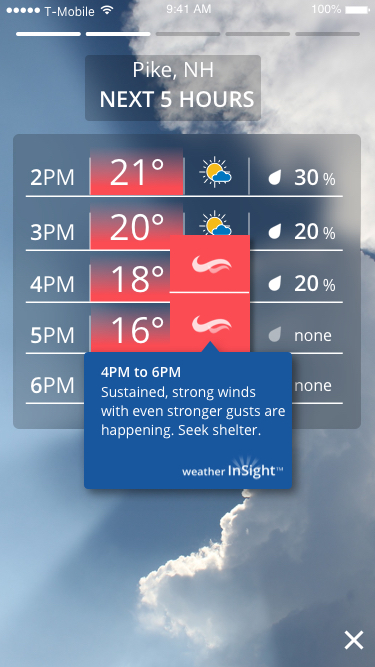
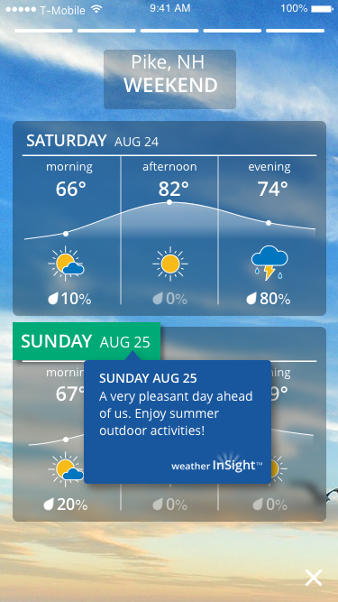

2019 – 2020
Case Study
A Reimagined Mobile Weather Experience
87% of people check the weather first thing in the morning on their devices before they check text messages, email or news. But there are thousands of weather apps out there! Weather apps make you data mine...Weather apps give everyone similar experiences...Weather apps are cookie cutter and don't change their behavior to suit the user's needs...
Need to stand-out.
Do more than look different........
BE DIFFERENT
Problem Statement
We want to put the weather data miner out of business, change the paradigm so that we give you the weather information you need without making you navigate around the app to find it. But we want to take it a step further than that: not only do we want to show you the right weather information in the right order, we want to help you understand what to pay attention to. We want to call out the things that you should be noticing to help you understand the weather data.
My Role
- Collaborate with business offering managers, executives, meteorologists, data scientists, developers and QA engineers.
- Participate in creating personas and user stories
- Facilitate design thinking sessions with stakeholders
- Translate ideas into design concepts
- Lead the UX exploration phase; build out wireframes and rough prototypes
- Lead the visual design phase; deliver high-fidelity screens and interactive prototypes
- Conduct user testing and roll back users' feedback into production
- Deliver visual & technical specs to development team
- Conduct visual QA and provide feedback to development team throughout implementation
Personas

Michael
Age 62 | Non Tech Savvy | Likes weather information delivered to him
Michael has been conditioned for decades to get his weather information "gerbered" to him from the television and he still watches the news in the morning and evening. He is used to having information given to him and still prefers this approach. Having to scroll in a mobile app to get his weather information isn't what he has been conditioned to do. Weather InSight should give Michael his information without him needing to interface with the experience. Click and watch is his preferred method versus hunting around.

Barbara
Age 55 | Non Tech Savvy | Why is so hard to understand the weather?
Barbara is not tech savvy and is commonly disappointed with the weather information she is getting because it is different from the actual weather she gets. She commonly cancels outdoor plans because the forecast called for rain, but she missed the fact that the app was telling her the amount of rain was going to be .003 inches of rain.
She doesn't discern the difference between .003 inches of rain and .3 inches of rain and makes plans as if they are the same. She sees rain as rain and needs help translating weather data to what the weather experience will be. She ultimately wants to know when the weather will impact her plans.
Derek
Age 19 | Super Tech Savvy | Short attention span kind of guy
Derek is a millennial and regularly uses Social Media Apps like Snapchat and Instagram; he is used to the Stories capabilities built into these products. He likes quick snippets of information and consumes a lot of information in a little bit of time. He wants a weather app that seems similar to the experiences he gets from his other social media apps: fast moving data where he can quickly navigate through a lot of information in a short amount of time.
Amanda
Age 32 | Tech Savvy | I get my information on-the-fly
Amanda is a working professional and an active Mom. She is always on the go. Between meetings she wants to check what the afternoon weather will be for her son's soccer game, and then she has plans to meet with friends later in the evening for a walk.
Amanda is really looking for a quick way of seeing what her afternoon and evening weather will be; if her next meeting starts a little late, she may even glimpse at tomorrow's weather because she has a similar schedule for the next day.
Nick
Age 29 | Tech Savvy | Mr. cool experience guy
Nick is an outdoor enthusiast and weather doesn't stop him from enjoying the outdoors. He is a chill kind of guy and likes to check the weather for multiple locations so he can make his weekend plans. He gravitates towards apps that are visually appealing and frequently checks for week day trail runs and cranking out some single track mountain bike rides after work. He checks the weather throughout the day for his after work and weekend forecast.
Eleni
Age 15 | Super Tech Savvy | It's all about me
Eleni is a teenager and has become accustomed to getting targeted/relevant information through other mobile apps. Eleni would like to view the forecast snapshots that matter to her more often than the ones that don't matter to her. If she frequently skips a screen, she doesn't want to see it as frequently. Eleni wants a hyperpersonal forecast.
Market Findings
80%
of users want ease of use when viewing weather content
65%
of users want to be told how weather impacts them personally
52%
of users want more local data
User Needs
"I want information that is relevant to me."
"I don't want to be overwhelmed by weather data. I just want a weather-at-a-glance experience."
"I like visually compelling apps like Instagram or Snapshot."
"I don't want to understand weather data. What's a dew point?"
Big Ideas Vignettes & Prioritization Grid
Next, our team brainstormed Big Ideas. According to the IBM Design Thinking toolkit, this exercise helps us to rapidly diverge on a breadth of possible solutions to meet our users' needs. These were the ideas that the team came up with and sketched around:
I want a personal mini-meteorologist delivering forecast to me.
I like simple navigation. A continuous scroll maybe? When I'm in a commuter train I relax and use simple gestures to look at stuff.
If I have an outdoor event scheduled in my calendar it would be nice to have a weather info next to it.
I want to be entertained by sophisticated motion animations which is not too tacky.
I don't want to see numbers, I want to see cool graphics and easy to understand charts.
Concept Exploration & Wireframing
Combining elements from all of these ideas, taking into consideration where they fell within our team's importance and feasibility Prioritization Grid exercise, inspired the starting point for my concept wireframes.



Data Visualization
We wanted to simplify the weather data and use compelling visualizations to delight our end users. We created a humidity/temperature relationship discomfort (Dew Point) dial for warmer weather and a cold discomfort dial for the winter months.
The speed of the wind turbines spinning reflects the actual wind strength


Weather Impact Highlights
The app will tell you when you will be impacted by the weather. Whether it's a negative or positive impact.


Simple Navigation
Swipe horizontally to see weather snapshots. Similar to Facebook or Instagram stories.
Client Branding
Client can drop their own background images, put sponsor/station logos on the first and last screens, and custom design the app launch button.
What Makes Weather InSight Different
- Hyper Local: Builds a customized experience built for your specific location
- Hyper Local: Videos produced by your local station put you directly into the experience
- Hyper Smart: It will tell you when you will be impacted by the weather
- Hyper Smart: The card order will change depending on the weather and day
- Hyper Smart: It will get to know you and display screens relevant to you
- Hyper Focused: It will simplify the data
- Monetizing opportunities